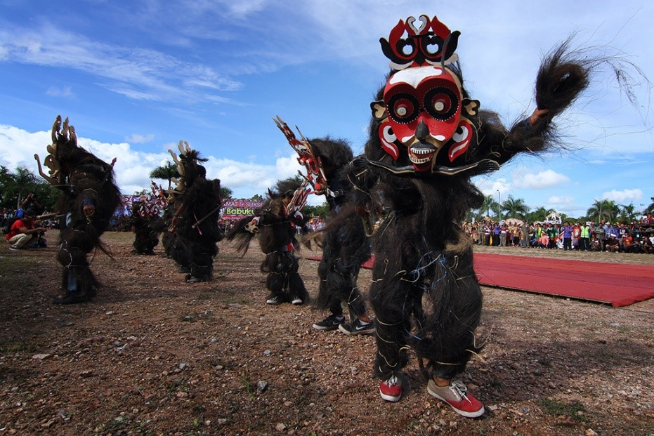

Tentang Gallery
Salah Satu Contoh Tempat Wisata yang ada di Kabupaten Lamandau


Riam Arum Jeram 
Arung jeram adalah suatu aktifitas pengarungan bagian alur sungai yang berjeram/riam, dengan menggunakan wahana tertentu. Pengertian wahana dalam pengarungan sungai berjeram / riam yaitu sarana / alat yang terdiri dari perahu karet, kayak, kano dan dayung.
Festival Babukung
Babukung yang merupakan Ritual Kematian umat Kaharingan masyarakat Suku Dayak Tomun di Kabupaten Lamandau. Ritual ini merupakan sebuah rangkaian acara panjang yang dilakukan oleh keluarga dan para kerabat dari orang yang telah meninggal dunia sebelum ia di kuburkan, dengan kata lain Babukung ialah ritual persemayaman Jenazah.
Wahana Swafoto
Daya Tarik Wisata ini menawarkan keindahan pemandangan serupa negeri di atas awan, panorama sunset dan sunrise yang dapat dinikmati dilokasi yang sama. Adanya spot-spot foto yang menarik menjadi daya tarik untuk wisatawan datang ke tempat wisata ini.
Hak Cipta Jokoria, S.Kom / Data Asli dari Dispar Kabupaten Lamandau